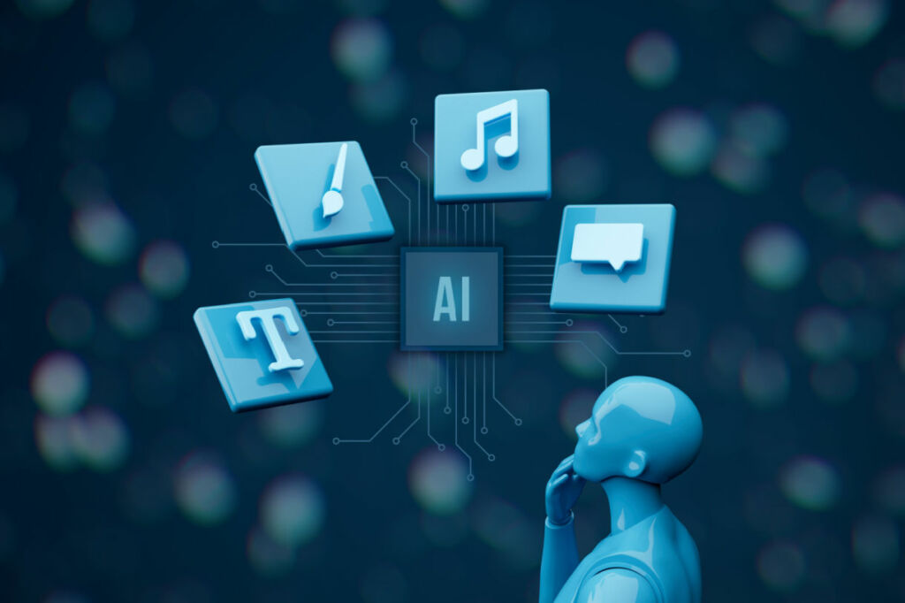

Impacto en el futuro
Actualmente las tendencias tecnológicas están impulsadas por la inteligencia artificial (IA) la automatización, la conectividad y la sostenibilidad. Estas innovaciones no solo mejoran la eficiencia operativa, sino que también abrirán nuevas oportunidades para empresas de todos lo tamaños. Algunas tecnologías emergentes que tendrán un impacto significativo en los próximos años incluyen:
IA generativa:
- Revolucionará la creación de contenido y la toma de decisiones en sectores como el marketing, la sanidad y la atención al cliente.
- Permitirá generar textos, imágenes y videos de alta calidad de forma automatizada.
- Transformará los procesos creativos en diseño, publicidad y entretenimiento.

Computación cuántica
- Optimizará procesos en finanzas, logística y farmacéutica, permitiendo avances que antes eran impensables.
- Resolverá problemas complejos en segundos que a las computadoras actuales les tomaría años.
- Revolucionará la criptografía y la seguridad de datos.

Energías sostenibles
- Baterías flexibles y combustibles sostenibles impulsarán la transición hacia un futuro más ecológico y eficiente.
- Nuevos materiales permitirán almacenamiento de energía más eficiente y duradero.
- Tecnologías de captura de carbono ayudarán a combatir el cambio climático.